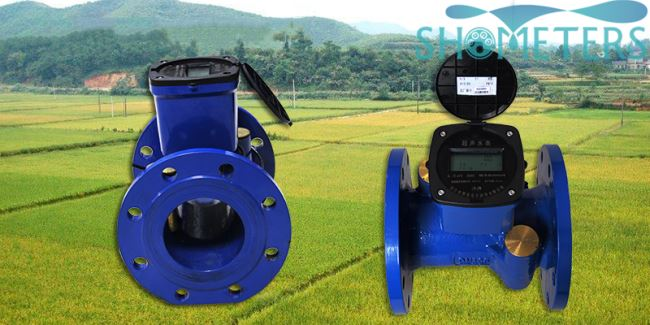

E-mail:
info@sh-meters.comCall Us:
+86 13131984716What are the special functions of the ultrasonic water meter, and why is it more suitable for agricultural irrigation?
What are the special functions of the ultrasonic water meter, and why is it more suitable for agricultural irrigation?

Anyone who works in agricultural irrigation knows that the installation environment of agricultural irrigation water meters is more complicated. Sometimes the water meter may be soaked in the water, and many people worry about the normal use of the water meter. The casing of this wireless ultrasonic water meter produced by SH-METERS is made of ductile iron, with a protection level of IP68, which can well isolate moisture. Don't worry that soaking in water will affect the normal use of the functions of the water meter.
In addition, the wireless ultrasonic water meter uses a low-power design, is powered by a large-capacity lithium battery, has a life span of more than 10 years, and has no electromagnetic radiation.
The above is the relevant introduction about the selection of wireless ultrasonic water meters for agricultural irrigation.SH-METERS specializes in the production of various diameters and types of wireless ultrasonic water meters. If you are interested in our products, please feel free to contact us and look forward to your cooperation!
 City Outside House Commercial Multi Jet Hot Water Me...
City Outside House Commercial Multi Jet Hot Water Me... Brass Multijet Water Meter
Brass Multijet Water Meter GPRS Amr Water Meter
GPRS Amr Water Meter Valve Controling Integrated Keypad Sts Prepaid Water...
Valve Controling Integrated Keypad Sts Prepaid Water...